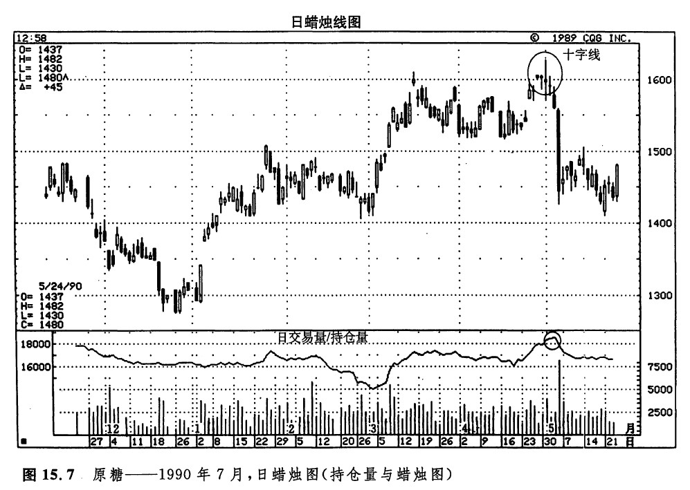

持仓量与蜡烛图
图15.1所示为长期国债市场，其中显示出丰富的交易量信息。本图还展示了上升的持仓量在验证价格趋势方面的重要性。现在我们回头再来看看这张图表，不过，这一回请把注意力放在持仓量图线上。对图15.1，我们可以进行以下几个方面的分析。
从3月13日开始，长期国债市场形成了一轮较小的上冲行情，一直持续到3月22日。在这轮上涨行情的演化过程中，持仓量是下降的。这就意味着这一轮上涨行情是由于空头者买进平仓引起的。一旦空头者买进平仓的过程结束，这轮上涨行情也就结束了。这段上涨行情终止于蜡烛线①。这一天形成了一根黄包车夫线，并且标志着市场对2月底位于94美元附近的高点的试探的失败。4月9日，当图示的抛售行情开始的时候，持仓量也随之上升。上升的持仓量意味着新的多头者和新的空头者入市买卖。不过，熊方显然更为积极大胆，因为他们在逐步下降的价格水平上依然愿意卖出。在整个4月份的下跌过程中，持仓量持续增长。4月27日和5月2日，市场形成了两根十字线（在88 1/2的水平上）。从这时起，持仓量开始水平伸展。这反映出熊方卖出压力的衰减。
如图15.6所示，在整个5月里，价格上涨，持仓量也上涨，形成了一种健康的组合。但是在6月份，虽然价格继续上涨，持仓量却在下降，这种反差就显得不太正常了。这就说明，6月份的上涨行情在很大程度上是由于空头买进平仓所引起的。就上涨行情的进一步发展来说，这样的局面不是一个好的征兆。图示的流星线标志着市场顶部的形成，在接下来的4个交易日里，市场一下子便抹消了过去花费了约一个月积累起来的价格上涨。

当市场处于新高水平时，如果持仓量恰巧也达到了异乎寻常的高水平，可能预示着市场即将陷人困境。这是因为，上升的持仓量意味着新的空头者和新的多头者正在进入市场。如果市场处于稳步上涨的上升趋势中，那么，这些新的多头者将会随着价格水平的逐步上升，逐步提高卖出止损指令的水平。万一价格突然下滑，将引发执行止损指令的连锁反应，有可能导致价格的狂泻。图15.7所示的实例很好地体现了上述道理。该图选自原糖市场。从3月初开始，在2个月之内，市场始终在从0.15美元到0.16美元的区间中波动。在4月下旬发生的最后一段上涨行情中，持仓量发生了显著的增长。到5月初，持仓量已经达到了很不寻常的高水平。随着这个上涨行情的发展，新的多头者的卖出止损水平也就水涨船高，逐步抬升到较高的价位。这时，出现了一系列十字线，它们暗示市场已经转入犹豫不决的状态，可能形成一个顶部。5月4日，市场受到打压，于是，一个止损指令接着一个止损指令被触发，如同多米诺骨牌，结果，市场直线下跌。

这种高水平的持仓量还有另一方面的特点。有一部分新的多头没有能够止损出市，被套牢在较高的价格水平上。这是因为随着持仓量的累积，新的多头和新的空头不断涌入市场。但是，由于这场急转直下的下跌行情，价格已经回落到了2个月内的最低水平。凡是在过去两个月中买进者，现在都处于亏损状态。那些在接近价格高点处买进的多头者更是备受“煎熬”。从接近0.16美元的高水平处的高额持仓量来判断，很可能有不少多头处在这种“备受煎熬”状况中。那么，他们将利用一切可能的上涨行情来平仓出市。这种情景展现5月中旬。当时市场曾经形成了一段较小的上涨行4情，达到了0.15美元，于是马上招致了沉重的抛售压力。
下一篇：第十六章 蜡烛图与艾略特波浪理论
上一篇：持仓量
copyright @ 2018 制作：汉钛电线，Hingtak Wire & Cable LLC